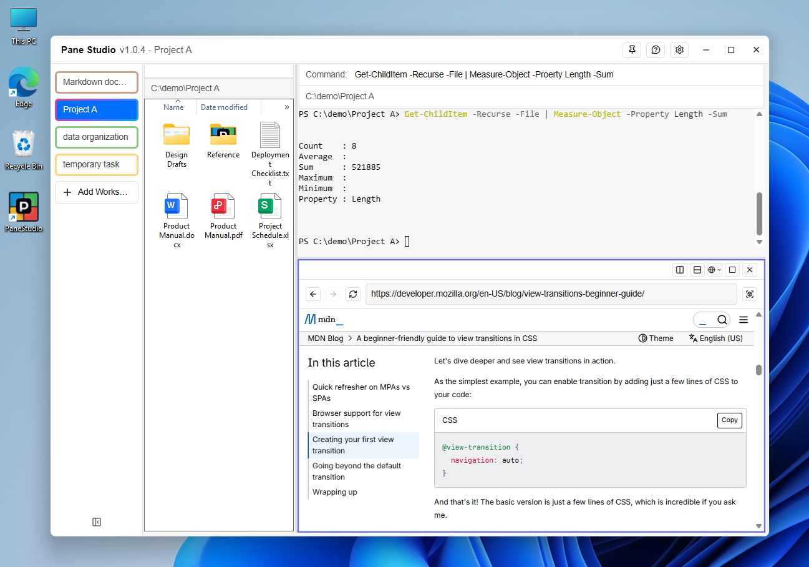
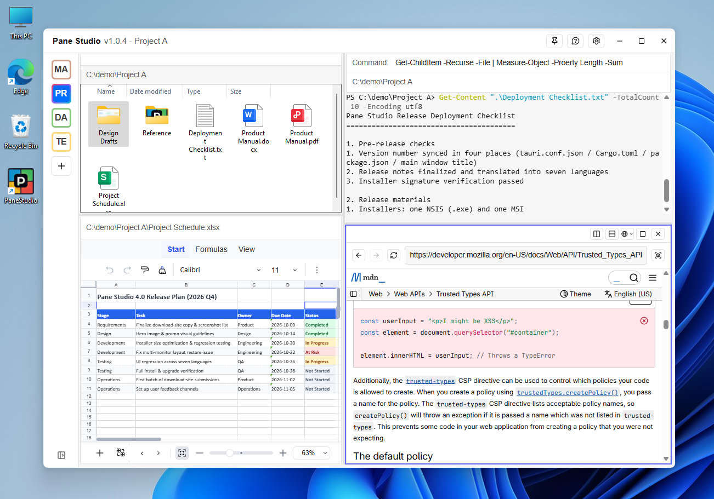
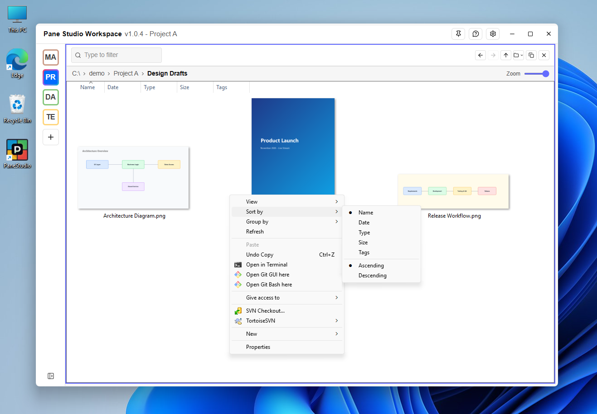
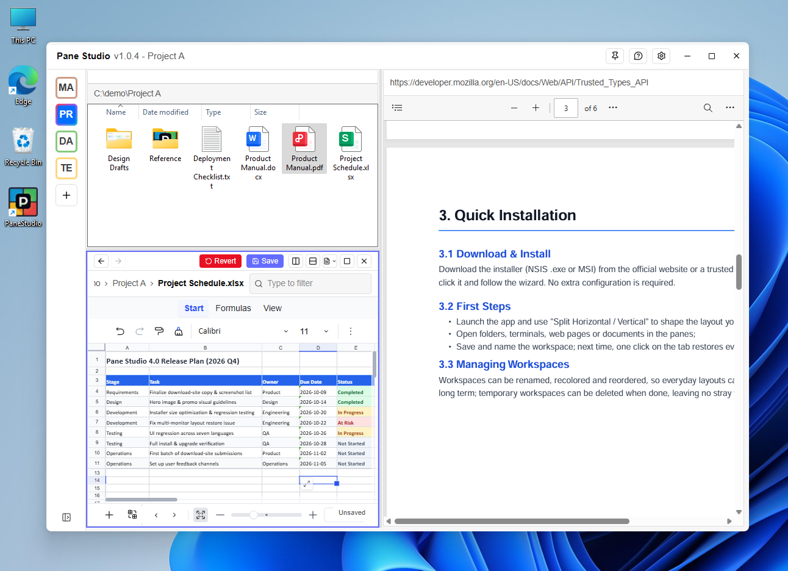
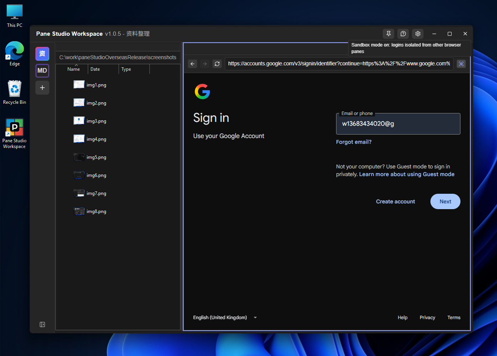
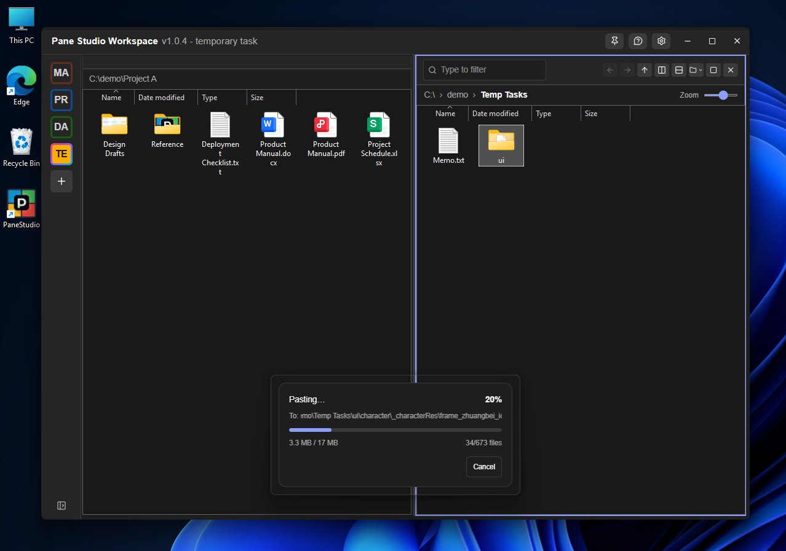
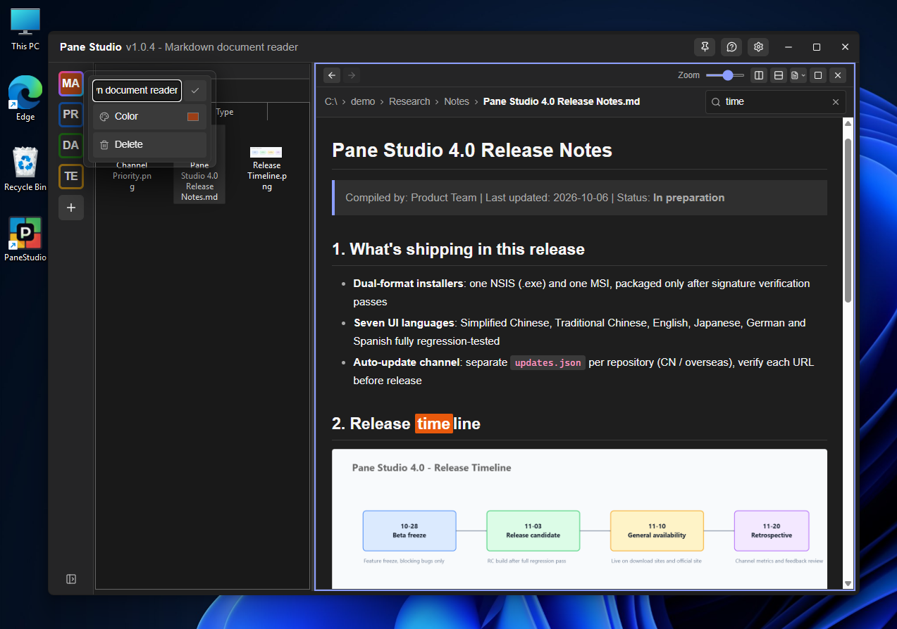
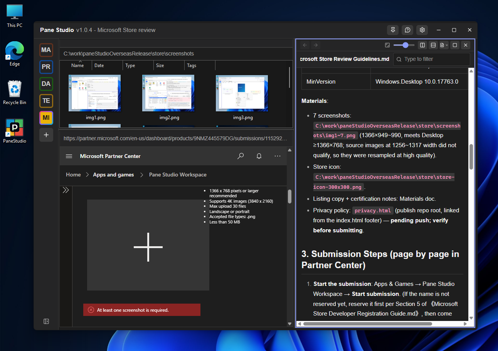

Pane Studio packs a file manager, terminal, web browser, and document viewer into a single, freely splittable window — and any layout you arrange can be saved as a workspace that survives a reboot.

To edit a spreadsheet while reading a document, looking something up in a browser, and running commands, you end up juggling four or five windows — hunting for them, minimizing them, covering each other up.
All panes live in a single window — one taskbar icon and one Alt+Tab entry in total, no matter how many tools are on screen.
Windows Snap is only a temporary arrangement — everything is lost after a reboot. In Pane Studio, arrange a layout, give it a name, and save it as a workspace; one click on its tab restores the whole group.
Switching workspaces swaps one arrangement for another inside the same window — flipping between two layouts takes two clicks, and each workspace keeps its own folders, URLs, and documents.
The main interface has a workspace bar on the left (each tab is an independent window layout) and an arrangement of panes on the right. Any pane can be split horizontally or vertically, maximized, and restored — split ratios are remembered.

Everything runs inside one window — arranged once, reused forever.
The folder pane embeds Windows' own Explorer control: icons, thumbnails, context menus, sorting, and zooming are all native system behavior. Supports instant keyword filtering and multiple zoom levels.

PDF, Markdown, and Word all support search and zoom as read-only previews; Excel workbooks (.xlsx) can be edited directly and saved back to the original file. Markdown headings, tables, code blocks, and images are fully rendered out of the box.

Open web pages without leaving the workspace. Each web pane can enable sandbox mode independently, keeping login state isolated from other panes so multiple accounts never mix.

Copy, cut, and paste directly between panes. Pasting runs in a separate progress window showing real-time progress that can be cancelled at any time, so long tasks never freeze the UI.

Create as many workspaces as you like, each with its own layout. Rename, color-tag, drag to reorder, and delete from the workspace bar's context menu — layouts become assets you keep using.

The screenshot above is the actual layout used when submitting the app to the Microsoft Store: top-left is a folder pane holding the screenshots to upload; bottom-left is a web pane open on the Store submission page; the right side is a document pane showing the submission checklist as Markdown. Screenshots are dragged straight from the folder pane into the upload area of the web page, following the checklist as you fill in the form — all without ever leaving this one window.

Open a source directory on the left, run a terminal on the right, add a browser pane to look up errors when needed. Set the layout once and reuse it forever.
Comparing multiple Excel files is a daily must: arrange two or three sheets as panes, view and edit them side by side, then save each back to its original file.
Treat it as an instantly available lightweight Office: when a PDF, Word, or Excel file arrives and you want a quick look, just drag it into a pane — Excel workbooks (.xlsx) can even be edited and saved.
Files in a remote clipboard can be pasted directly into a pane — no more manual uploading and downloading.
Tidy up files, grab information from a web page, or process a spreadsheet; close the window when done and leave no pile of leftover windows behind.
Web panes are based on Microsoft Edge WebView2, which Windows 10/11 usually includes out of the box. If a web pane says it can't initialize, install the runtime from Microsoft's website.
The built-in spreadsheet editor is deliberately lightweight — "quick viewing + routine data edits". It is not a full Office replacement: on save, advanced features in the original document such as images, charts, macros, and complex formulas may be lost. The app clearly warns you before the first save — always back up important files.
"Agent support" in Settings is off by default. When enabled, the app reserves a local debug port so AI tools on the same machine can drive web panes; it is not reachable from outside your PC and uploads nothing. If your firewall prompts you, allowing local access is fine.
| Name | Pane Studio |
| Current version | 1.0.4 |
| Size | approx. 8.5 MB (installer) |
| Category | System Tools → File Management / Multi-pane Workspace |
| License | Free |
| Supported OS | Windows 10 / 11 (64-bit) |
| UI languages | Simplified Chinese, Traditional Chinese, English, Japanese, German, Spanish, French |
| Required component | Microsoft Edge WebView2 Runtime |
| Installer formats | NSIS (.exe), MSI |
Free, no ads. Set your layout once — Pane Studio keeps it.
⬇ Download PaneStudioWorkspace_1.0.4_overseas_x64-setup.exeWindows 10 / 11 (64-bit) · approx. 8.5 MB · built-in auto-updater prompts you when a new version is released
Questions, feedback, or bug reports — reach us on any of these:
 Pane Studio
Pane Studio